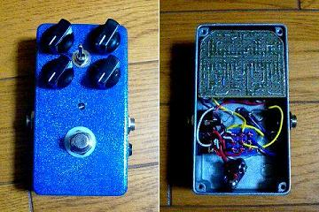
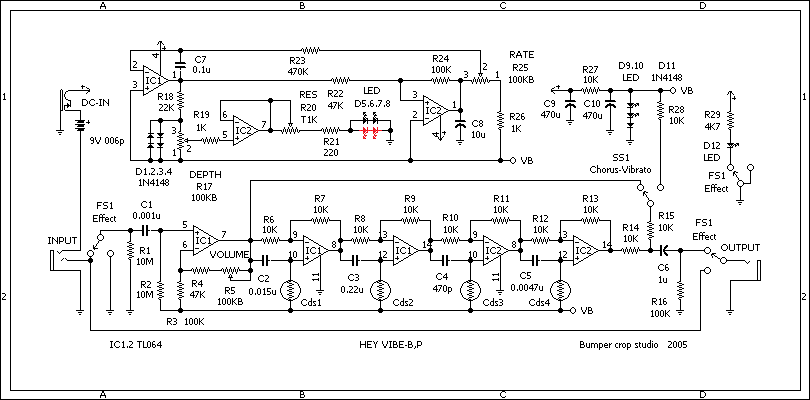
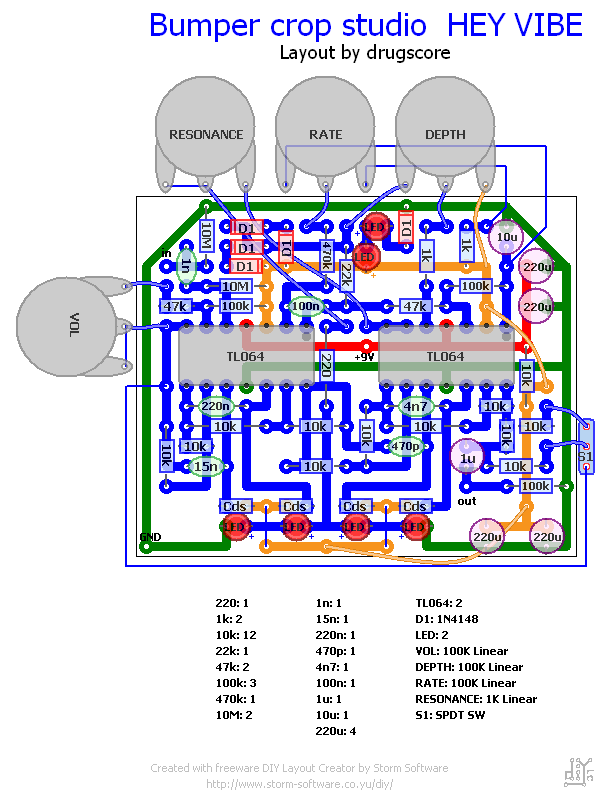
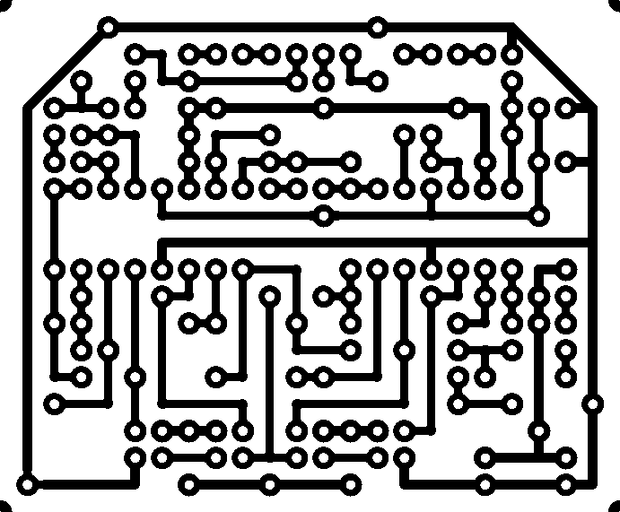
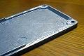

Bumper crop studio HEY VIBE
2008年03月13日 カテゴリー：自作エフェクター（アナログ）

Bumper crop studioのHEY VIBEです。
▽回路図（入手できなくなったようなのでアップしておきます。2016年11月）

※Easy Vibeの回路図を参考に、LEDの向きを訂正（2017年3月）
▽レイアウト

▽PCB（横58.4mm縦48.3mm）

強引にMXRサイズに詰め込んでみました。小さいLED/Cdsじゃないと無理そうです（LED/Cdsの製作記はこちら）。しかもスイッチがあるので裏蓋も削ってなんとかしました（下写真参照）。

実は去年既に完成してたんですが、コーラスモードがいまひとつだったのでしばらく放置していました。変調感が強い気がします。まぁでもこんなもんだと思ってあきらめます。ビブラートモードはなんともいえないすごい音ですね。Bumper crop studioのサウンドサンプルの通りです。
ついに面倒になってラベルも貼ってないです。そのうちボリュームとレゾナンスをなくして組み込みなおすかもしれません。
（2016年11月9日回路図・PCB追加）